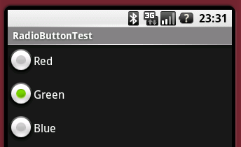

RadioButton使用

- 使用单选框的时候，要用RadioGroup来分组
- 选择RadioGroup里的单选框的时候，将调用RadioGroup的Check·()方法
- 追加单选框被选择时处理的时候，
- 调用setOnCheckedChangeListener()方法，并把RadioGroup.OnCheckedChangeListener实例作为参数传入
- 在RadioGroup.OnCheckedChangeListener的onCheckedChanged()方法里，取得被选中单选框的实例
相关类
import android.widget.RadioButton; import android.widget.RadioGroup;
例程源码(Java)
RadioGroup radioGroup = (RadioGroup) findViewById(id.radioGroup);
radioGroup.check(id.radioButtonGreen);
RadioButton radioButton = (RadioButton) findViewById(
radioGroup.getCheckedRadioButtonId());
Log.v("Test", String.valueOf(radioButton.getText()));
radioGroup.setOnCheckedChangeListener(
new RadioGroup.OnCheckedChangeListener() {
public void onCheckedChanged(
RadioGroup group,
int checkedId) {
RadioButton radioButton = (RadioButton) findViewById(checkedId);
Log.v("Test", String.valueOf(radioButton.getText()));
}
});
例程源码(Resource)
<RadioGroup android:id="@+id/radioGroup"
android:layout_width="wrap_content"
android:layout_height="wrap_content">
<RadioButton android:id="@+id/radioButtonRed"
android:layout_width="wrap_content"
android:layout_height="wrap_content"
android:text="@string/Red" />
<RadioButton android:id="@+id/radioButtonGreen"
android:layout_width="wrap_content"
android:layout_height="wrap_content"
android:text="@string/Green" />
<RadioButton android:id="@+id/radioButtonBlue"
android:layout_width="wrap_content"
android:layout_height="wrap_content"
android:text="@string/Blue" />
</RadioGroup>